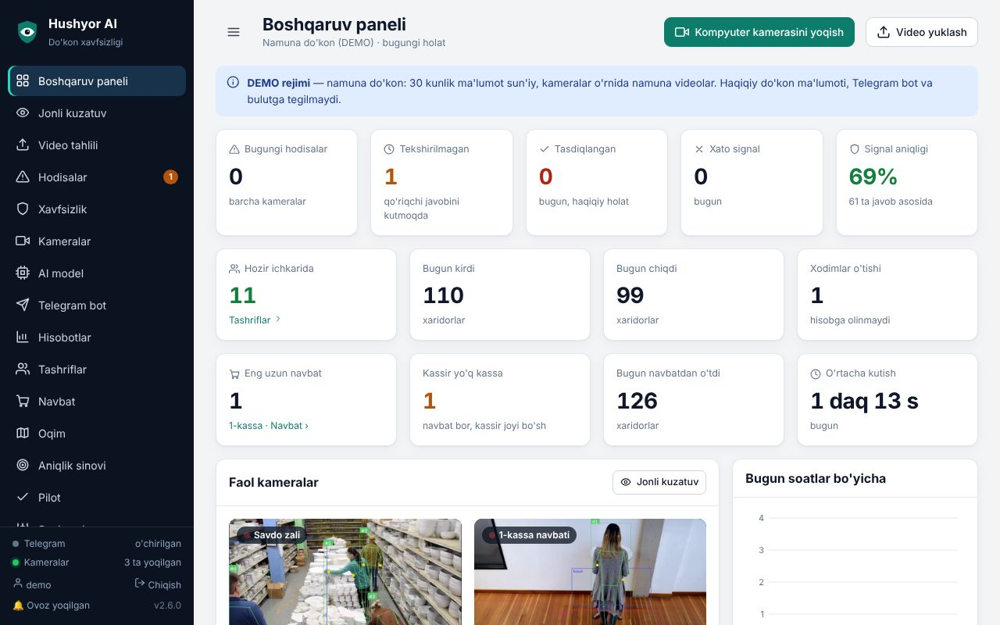
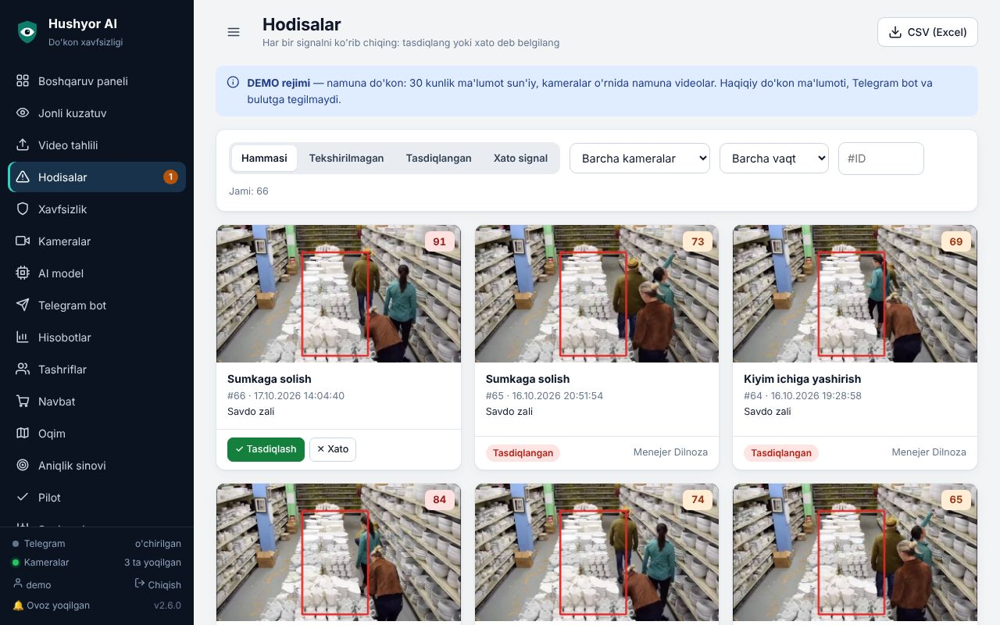
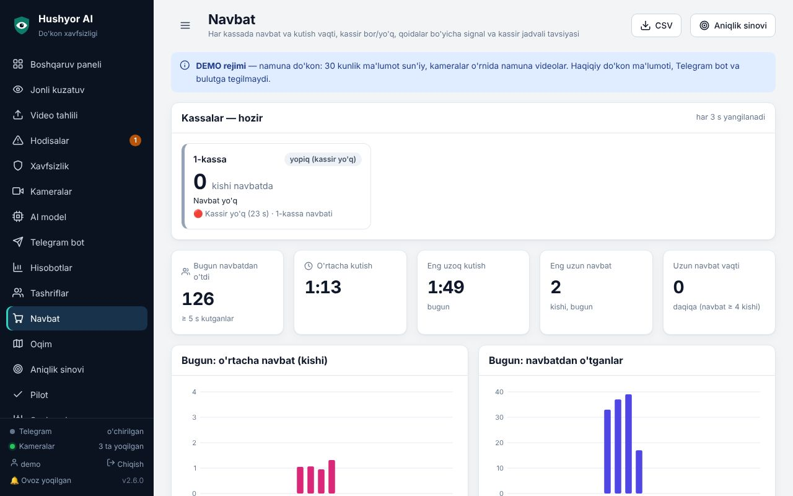
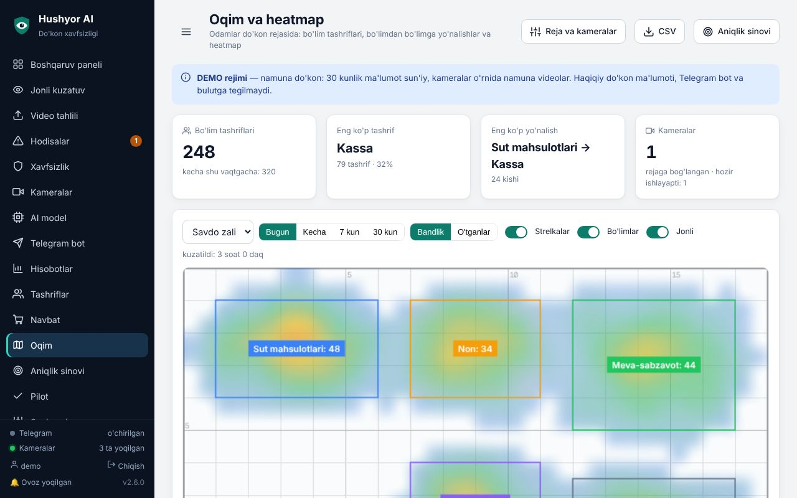
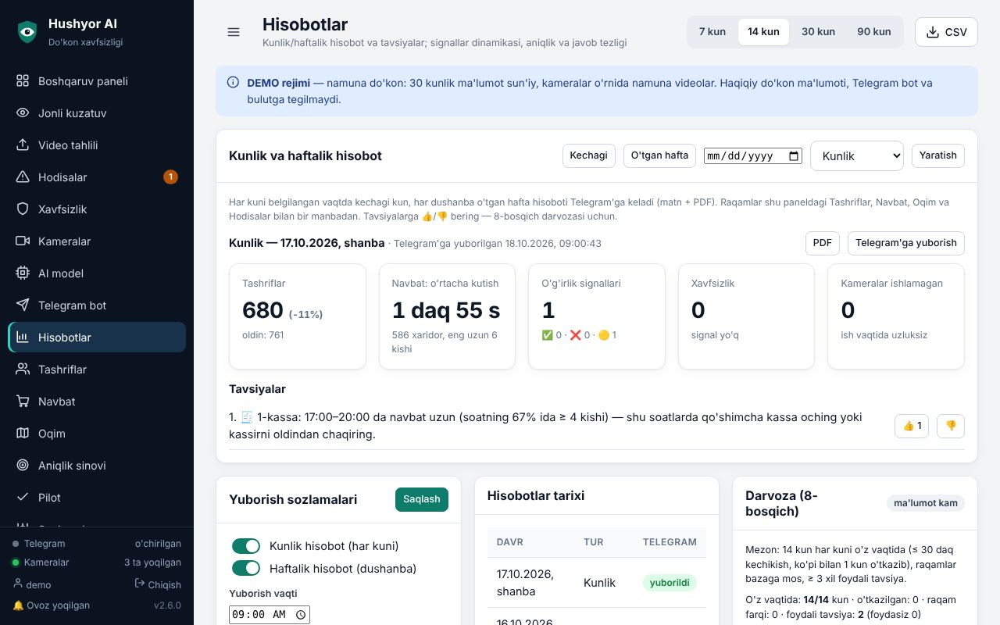
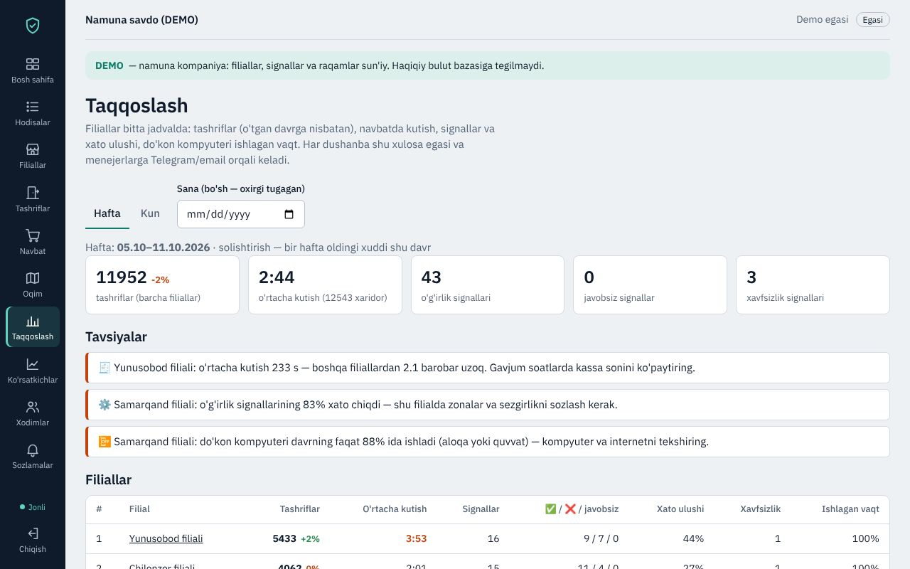
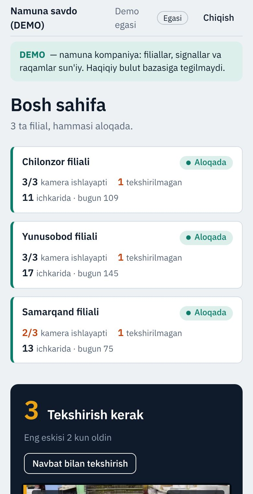

⚠️ O'g'irlik signallari
Qo'l cho'ntakka, kiyim ichiga yoki sumkaga kirdi — sababi va videosi bilan Telegram'ga. Qo'riqchi bir bosishda tasdiqlaydi yoki "xato signal" deydi.
Do'konlar va supermarketlar uchun
Hushyor AI mavjud kameralaringizga ulanadi: shubhali harakatni qisqa videosi bilan Telegram'ga yuboradi, xaridorlarni sanaydi, kassadagi navbatni o'lchaydi va har kuni ertalab qisqa hisobot beradi.

Hammasi do'kondagi kompyuterda ishlaydi. Telegram'ga faqat muhim narsa keladi.
Qo'l cho'ntakka, kiyim ichiga yoki sumkaga kirdi — sababi va videosi bilan Telegram'ga. Qo'riqchi bir bosishda tasdiqlaydi yoki "xato signal" deydi.
Kirish eshigidagi chiziq: bugun nechta xaridor kirdi, hozir ichkarida nechta, qaysi soatlar gavjum. Xodimlar alohida sanaladi.
Navbat uzunligi, kutish vaqti, kassir joyida yo'qligi. Navbat uzaysa — darhol xabar va kassir jadvali bo'yicha tavsiya.
Do'kon rejasida: qaysi bo'limga ko'p kirishadi, xaridorlar bo'limdan bo'limga qanday yuradi, qayer bo'sh qoladi.
Odam yiqildi, ish vaqtidan tashqari kimdir kirdi, kassa oldida gavjumlik — bularni ham kameralar o'zi sezadi.
Har kuni ertalab kechagi kun, har dushanba o'tgan hafta: raqamlar, o'tgan davr bilan solishtirish va aniq tavsiyalar (PDF ham).
Rasmlar demo do'kondan olingan (raqamlar namuna uchun).






4 haftalik pilot natijasini oldindan kelishilgan mezonlar bilan baholaymiz. Hammasini panelning "Pilot" bo'limida o'zingiz ko'rib turasiz.
Narx kameralar soni, filiallar va bulut paneli kerakligiga bog'liq. Pilotdan keyin aniq taklif beramiz.
Ko'pincha yo'q: RTSP oqimi beradigan IP kameralar yoki DVR/NVR ulanadi. Ko'rib chiqishda qaysi kamera qaysi ish uchun yaroqli ekanini aytamiz (masalan, kassa navbati uchun kassani yuqoridan ko'radigan kamera yaxshi).
Tahlil do'kondagi kompyuterda bo'ladi — internet uzilsa ham kuzatuv davom etadi. Signallar va raqamlar internet qaytganda Telegram va bulutga yetkaziladi.
Videoarxiv do'koningizdagi kompyuterda. Telegram'ga faqat signalning qisqa klipi va rasmi boradi; bulut paneli ishlatilsa, unga ham signal kliplari va yig'indi raqamlar boradi — doimiy video oqimi emas.
Ha, har qanday kamera tizimi kabi. Shuning uchun har signalni odam tekshiradi, xato signal ulushi hisobotda ochiq ko'rsatiladi va zonalar, sezgirlik shu raqamlar asosida sozlanadi.
Yo'q. Tizim shaxsni aniqlamaydi — harakatni baholaydi: qo'l, sumka, polka oldida turish, navbat, o'tish chizig'i.
Ha: har filialdagi kompyuter bulut paneliga ulanadi. Egasi hamma filiallarni, menejer va qo'riqchi faqat o'z filialini ko'radi. Har dushanba filiallar taqqoslangan xulosa keladi.
Telefon raqamingizni qoldiring — bog'lanib, do'koningizni ko'rib chiqish vaqtini kelishamiz.